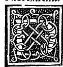

CAPITOLO VIII¶
Commo se intendi la quantità diuisa secondo la propor- tione hauente el mezzo e doi extrerai.

Dobiamo sapere che queste cose ben notate a diuidere vna quantità secondo la proportione hauente el mezzo edoi extremi. voi dir di quella far doi tal parti inequali chel producto dela menore intutta dieta quantità indiuisa sia quanto el quadrato dela magior parte, comme per la 3. diffinitione del 6. dechiara el nostro philosopho. E pero quando mai nel caso non se nominasse diuidere dieta quantità.
Secondo la proportione hauente el mezzo e doi extremi ma solo dicesse el caso farne doi parti cosi conditionate chel producto de luna in tutta dieta quantità saguagli al quadrato de laltra parte a ehi ben intende e in larte sia experto deue el proposito a dieta nostra proportione redure, pero che altramente non se pò interpretare, verbi gratia. Ghi dicesse famme de io. doi tal parti che multiplicata luna per io. facia quanto laltra multiplicata in se medesima.
Questo caso e altri simili operando secondo li documenti da noi dati nella pratica speculatiua detta algebra e almueabala per altro nome la regola dela cosa posta in la prealegata opera nostra se trouana soluto, luna parte cioè la menore esser i5. m. R. 125. e laltra magiore fia R. I25. m. 5. Lequali parti cosi deseripte sonno irrationali e nellarte se chiamano residui. Deli quali le specie asegna el nostro philosopho nella 79. del io. esser o. E vulgarmente diete parti se prefereseano cosila menore quando dici meno radice de centouentieinque. E voi dir tal parlare. Presa la R. de i25. qual fia poco più de 11. E quella tracta de i5. che restara poco più de 3.
O vogliam dire poco meno de 4. Eia magiore se proferesci R. de i25. meno 5. E voi dire presa la radice de i25. qual e poco più de 11. commo e dicto e di quella tracto 5. che restarla poco più de 6. o vogliam dire poco meno de 7. per dieta magior parte. Ma simili acti de multiplicare, sumraare. sottrare partire de residui binomii e Radici e tutte altre quantità rationali e irrational! sani e rotti in tutti modi per hauerli nella prefata opera nostra apieno dimostri in questo non curo replicarli e solo se atende a dire cose noue e non legia diete a reiterare.
E cosi diuisa ogni’ quantità sempre haremo tre termini ordinati in la continua proportionalita che luna sira tutta la quantità cosi diuisa. cioè el magiore extremo. commo qui nel proposto caso io. E laltro fia la magiore parte cioè el medio. Comme e R. i25. m. 5. el terzo menor fìa i5 m. R. i25. fra li quali fia la medesima proportione. Cioè dal primo al secondo commo dal secondo al terzo, e cosi per laduerso cioè dal terzo al secondo commo dal secondo al primo.
E tanto fa multiplicare el menore cioè o. m. R. i25. via el magiore che e io. quanto a multiplicare el medio in se. cioè R. i25 m. 5 che luno e laltro producto fìa i5o m. R. i25oo. si commo recercha la nostra proportione. E per questo io. fìa dicto esser diuiso secondo la proportione hauente el mezzo e doi extremi. eia sua magior parte fìa R. i25 m. 5. eia menore fìa i5. m. R. I25 che luna elaltra de necessita fìa irrationale, commo se proua per la sexta del terzodecimo, e ancora in la vndecima del secondo e 16. del 9. questo a notitia dela quantità cosi diuisa.